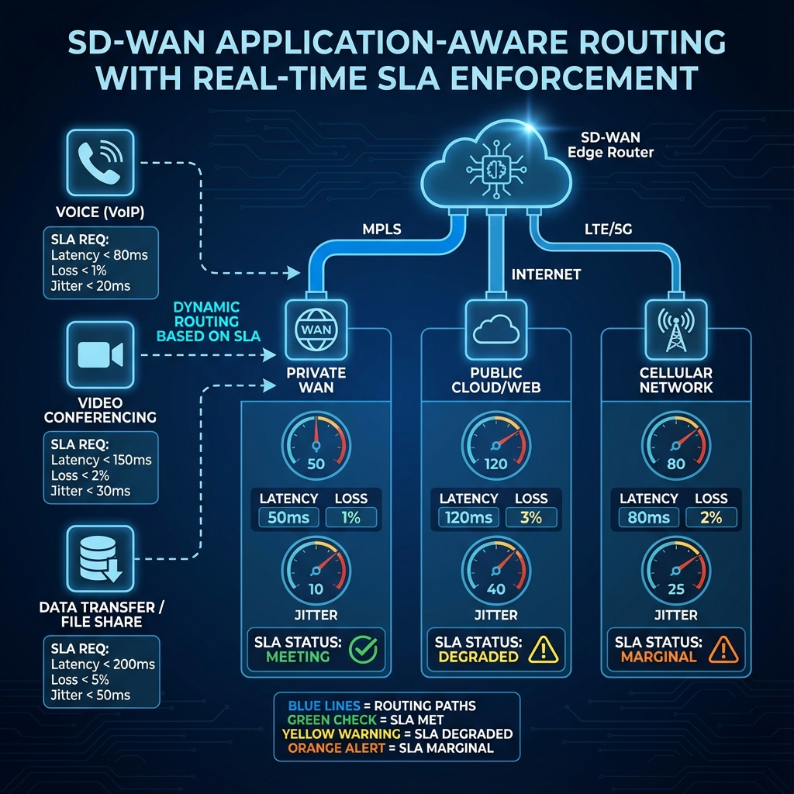

Chapter 9
Application-Aware Routing Policies
Learning Objectives
- Memahami Application-Aware Routing (AAR) concepts
- Mengkonfigurasi SLA classes dan thresholds
- Mengimplementasikan automatic failover
- Menggunakan load balancing strategies

Gambar 9.1 - Application-Aware Routing dengan SLA thresholds untuk pemilihan path dinamis
Application-Aware Routing Overview
AAR memungkinkan SD-WAN untuk secara dinamis memilih best path berdasarkan real-time SLA metrics.
Latency
Round-trip time in milliseconds
Loss
Packet loss percentage
Jitter
Latency variation
BFD Integration
AAR menggunakan BFD probes untuk measure real-time path quality metrics.
SLA Classes
SLA classes mendefinisikan acceptable thresholds untuk different application types.
| SLA Class | Latency | Loss | Jitter | Applications |
|---|---|---|---|---|
| Voice | <150ms | <1% | <30ms | VoIP, Telephony |
| Video | <200ms | <1% | <50ms | Video conf, Streaming |
| Critical | <300ms | <2% | N/A | ERP, Database |
| Default | Any | Any | Any | Best effort traffic |
Failover Mechanisms
Failover Options:
🔄 Preferred Color
- Primary: Use specified color if SLA met
- Failover: Switch to backup if SLA violated
⚖️ SLA-based Fallback
- Automatic failover when SLA thresholds breached
- Switchback when primary recovers
📊 Load Balancing
- ECMP across multiple paths meeting SLA
- Weighted distribution based on capacity